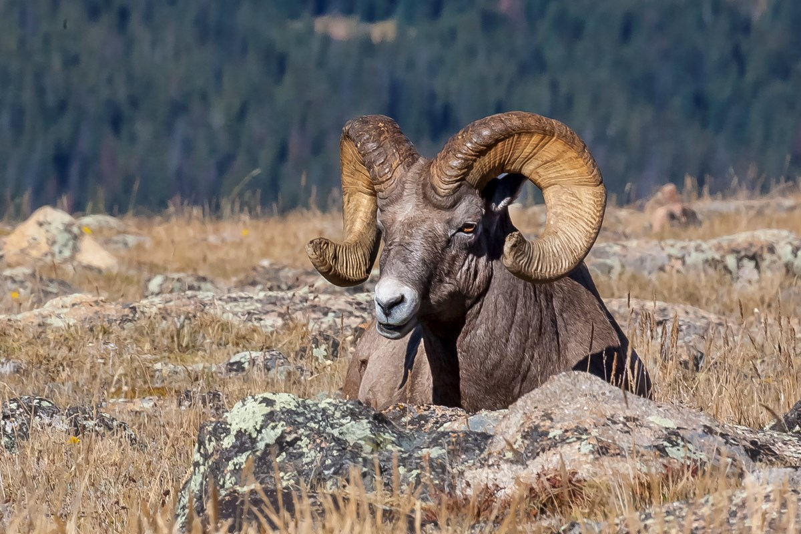

Bighorn sheep habitat starts where elk habitat ends. Sheep inhabit higher steeper elevation bands with adequate escape cover. Escape cover includes steep avalanche chutes, rocky piles, or bands, or even shale faces. Like elk, sheep are grazers so need these steep, rocky bedding areas to be close to green grass and feed. Usually, this feed is found in avalanche chutes, alpine bowls, or subalpine winter range.
Sheep densities are much lower than other game animals and even good habitat can be devoid of sheep. Despite this, sheep are creatures of habit and migrate to consistent winter range areas where several family groups combine around adequate feed and open south facing slopes.
Unlike elk, sheep have a relatively consistent distribution across the entire front range of the Rockies. Large populations still exist in the mountain parks but from the Montana border north to the Kakwa river most drainages, ranges and mountains hold resident or migratory herds of sheep. Low densities however make them incredibly hard to find consistently especially for mature rams who are often alone or in small groups compared to the relatively large ewe and young ram groups. Hot spots still exist for sheep hunters however this is often more to do with trophy quality than it is to do with numbers of animals. Areas with good genetics and feed produce larger rams and the distribution chart below will reflect those over areas of high populations.
| Hotspot | Management Zones | Population Viability | Trophy Quality |
|---|---|---|---|
| Castle/Livingston | WMU 400, 402 | Moderate | High |
| Cadomin/ Hinton | WMU 437, 438 | High | High |
| Clearwater | WMU 420, 422 | Moderate | Moderate |
| Willmore | WMU 444, 446 | Moderate-High | Low-Moderate |
Bighorn hunting strategies can be broken down into 3 distinct times of year based on breeding activity (rut) and weather patterns.
Spend time behind glass in the early season. Unpressured sheep are still in their summer haunts and getting to a high spot and covering ground with your eyes will ensure you are more efficient than hiking everything on foot. Horses can help you get further away from hunting pressure but scouting during the summer is the only safe way to ensure you find a legal ram. Speaking of legal rams, being able to identify a mature ram whose horns curl past the eye is difficult and requires practice. Hunters should spend lots of time looking at rams from multiple angles to ensure legality before shooting.
As summer turns to fall sheep begin the slow move towards rutting and winter ranges. For Rams this means they tend to travel towards local ewe herds at a slow but constant pace. This can be the hardest time of the year to find rams unless heavy snowfall speeds up their migration. Rams can be a dozen miles away in a matter of days as they home in on the ewe herds. One strategy is to monitor local ewe herds to ambush the rams as they close the distance or reach nearby ranges. Another strategy is to wait for heavy snowfall and descend upon migration routes while glassing for sheep and tracks. This is often the least busy time of year for sheep hunting.
Hunting sheep in the rut is only done under lottery tags in Alberta meaning demand far exceeds supply. If you are lucky enough to draw a tag, congratulations you are one of the 0.1% of hunters that ever get to hunt sheep in the rut. Rut hunting sheep is far easier than at earlier times of the year however weather is the primary adversary. Rams are with ewes at this time of year so glassing from down low to locate herds on mid or low elevation winter range will turn up sheep. Once you locate rams in November using available cover and topography to close the gap while watching the wind is important to not be caught out in the open on the all white background.